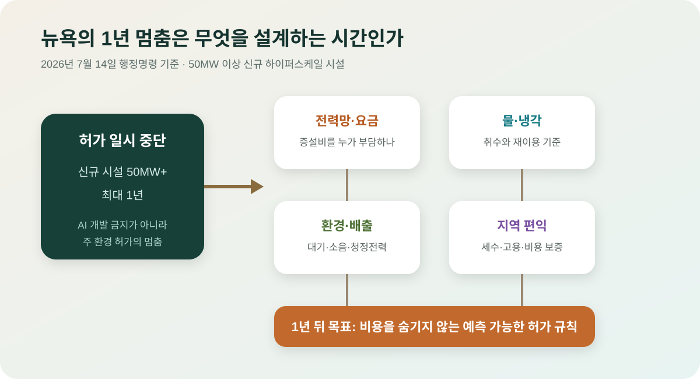

뉴욕의 AI 데이터센터 1년 중단: AI 인프라가 지역 정치가 됐다
뉴욕주가 대형 데이터센터 신규 허가를 최대 1년 멈추는 행정명령을 냈다. AI 모델 경쟁은 더 빠른 칩과 더 큰 데이터센터를 요구하지만, 전력요금, 물 사용, 소음, 지역 인프라 부담은 주민과 주정부가 감당해야 한다. 이제 AI 인프라는 기술 뉴스가 아니라 지역 정치와 전력망 뉴스가 됐다.
핵심 요약
AI를 돌리는 물리적 비용이 정책의 전면에 올라왔다
AP와 The Guardian은 Kathy Hochul 뉴욕주지사가 2026년 7월 14일 대형 데이터센터에 대한 주정부 허가 절차를 최대 1년 멈추는 행정명령을 냈다고 보도했다. 대상은 전력 수요가 큰 하이퍼스케일 데이터센터이며, 주정부는 이 기간 동안 전력 수요, 물 사용, 환경 영향, 지역 부담을 다루는 기준을 만들겠다는 입장이다.

정확히 무엇이 멈췄나
Kathy Hochul 주지사가 7월 14일 서명한 행정명령은 뉴욕 전역의 모든 서버실을 폐쇄하는 조치가 아니다. 전력 수요가 50MW 이상인 새로운 하이퍼스케일 데이터센터에 대해, 필요한 주 환경 허가 절차를 최대 1년 동안 멈추는 것이 핵심이다. 이미 완전한 허가를 받은 시설이나 기준보다 작은 시설의 처리 방식은 행정명령과 개별 허가 상태를 따로 확인해야 한다.
50MW는 단순한 숫자가 아니다. 24시간 높은 부하로 가동한다면 중소 도시 규모의 전력 수요와 비교될 수 있는 수준이다. 최신 AI 캠퍼스는 한 건물이 아니라 여러 동과 변전소, 냉각 설비를 단계적으로 확장하므로 장기 계획 전력은 이보다 훨씬 커질 수 있다. 뉴욕이 문턱을 시설 규모가 아니라 전력 수요로 정한 이유다.
주정부는 이 기간에 공공서비스부와 환경 관련 기관이 전력·물·대기질·지역 영향을 평가할 기준을 만들도록 했다. 공식 발표는 ‘Energize NY’ 절차를 통해 데이터센터가 더 높은 전력 비용을 부담하거나 자체 공급원을 마련하게 하는 방안도 언급한다. 즉 멈춤 자체보다 비용 배분 규칙을 새로 만드는 것이 정책의 본체다.
왜 AI 데이터센터가 기존 클라우드 시설과 다른가
전통적인 기업용 데이터센터도 많은 전력을 쓰지만 AI 학습과 추론 클러스터는 고밀도 GPU를 동시에 가동한다. 랙당 전력 밀도가 높고, 급격한 부하 변동을 처리할 송전·변전 설비가 필요하다. 칩이 발산하는 열을 빼기 위해 공랭만으로 부족하면 직접 액체냉각과 냉각탑, 추가 펌프 설비가 필요하다.
개발 속도도 문제다. AI 기업은 모델 경쟁에서 뒤처지지 않기 위해 수개월 단위로 용량을 확보하려 하지만, 송전선과 발전소, 변전소의 건설은 여러 해가 걸린다. 데이터센터가 먼저 연결되면 기존 주민과 제조업체가 전력망 증설 비용과 가격 변동을 떠안을 수 있다는 우려가 생긴다. 반대로 연결을 늦추면 대규모 투자가 다른 지역으로 이동할 수 있다.
주민이 보는 비용은 전기요금 하나가 아니다
전력망 증설 비용을 누가 내는지가 첫 번째 쟁점이다. 특정 대형 고객을 위해 새 변전소와 송전망을 지었는데 수요가 예상보다 줄거나 사업자가 철수하면 남은 이용자가 비용을 부담할 수 있다. 그래서 장기 최소 사용료, 선납금, 철수 시 비용 회수 장치가 필요하다는 주장이 나온다.
물 사용은 냉각 방식과 기후에 따라 크게 다르다. 모든 데이터센터가 같은 양의 물을 소비한다고 단정할 수 없지만, 증발식 냉각을 쓰는 대형 시설은 건조하거나 더운 시기에 지역 상수도와 경쟁할 수 있다. 물 사용량뿐 아니라 취수원, 재이용수 비율, 가뭄 시 감축 계획을 허가 단계에서 공개하는 것이 중요하다.
비상 발전기의 배출, 냉각 팬과 발전기 시험 소음, 넓은 부지와 송전선, 건설 교통도 지역 갈등을 만든다. 데이터센터는 건설 기간에는 많은 일자리를 만들지만 완공 뒤 상시 인력은 투자액에 비해 적을 수 있다. 세금 감면을 포함한 공공지원과 장기 고용·세수의 균형을 따져야 한다.
업계 반론도 가볍게 볼 수 없다
데이터센터 업계는 일괄적인 중단이 친환경 설계와 그렇지 않은 프로젝트를 구분하지 못하고, 뉴욕의 투자와 일자리를 다른 주로 밀어낼 수 있다고 주장한다. AP가 인용한 업계 측은 경제 활동이 주 밖으로 이동할 것이라고 경고했다. AI 인프라는 기업이 입지를 비교해 옮길 수 있기 때문에 이 위험은 현실적이다.
시설이 뉴욕 밖으로 간다고 전력·탄소 문제가 사라지는 것도 아니다. 규제가 느슨하고 화석연료 비중이 높은 지역으로 이동하면 전체 배출이 오히려 늘 수 있다. 따라서 뉴욕의 정책이 효과적이려면 단순 금지보다 깨끗한 전력 추가 조달, 효율 기준, 비용 부담 계약을 충족한 프로젝트는 예측 가능하게 허용하는 출구가 필요하다.
대통령과 연방정부가 AI 경쟁력과 중국과의 경쟁을 이유로 주 규제를 비판할 가능성도 있다. 그러나 전력·용수·토지 허가는 전통적으로 주와 지방정부 권한이 강한 영역이다. 이번 조치는 미국 AI 정책이 ‘연방의 속도’와 ‘지역의 수용 능력’ 사이에서 충돌하는 대표 사례다.
좋은 규제는 멈춤 뒤에 무엇을 만드느냐로 평가해야 한다
첫 번째 해법은 대형 고객 전용 요금제다. 데이터센터가 요구한 송전·발전 설비 비용을 일반 가정에 전가하지 않고, 장기 계약과 담보로 회수하는 방식이다. 두 번째는 전력 추가성이다. 기존 청정전력을 빼앗는 구매계약이 아니라 새로운 재생에너지·원전·저탄소 전원을 실제로 추가하도록 요구해야 한다.
세 번째는 투명성이다. 시간대별 전력과 물 사용, 비상발전기 가동, 탄소 배출, 고용과 세금 감면을 표준 형식으로 공개해야 주민이 약속과 실적을 비교할 수 있다. 네 번째는 유연한 부하다. 전력망이 급박할 때 학습 작업을 늦추거나 다른 지역으로 이동할 수 있다면 피크 설비 투자를 줄일 수 있다.
마지막은 폐쇄와 축소에 대비한 비용 보증이다. AI 수요 전망이 틀려 프로젝트가 중단돼도 변전소와 토지 복구 비용이 주민에게 남지 않게 해야 한다. 이런 조건이 명확하면 규제는 투자 방해가 아니라 좋은 사업자와 위험한 사업자를 구분하는 신호가 될 수 있다.
한국은 더 좁은 전력망에서 같은 결정을 내려야 한다
한국은 수도권의 데이터 수요가 크지만 발전소와 재생에너지 부지는 지역에 분산돼 있고, 송전망 확충에는 긴 시간이 걸린다. 데이터센터가 수도권에 몰리면 전력 계통 혼잡과 주민 반발이 커지고, 지방으로 옮기면 통신 지연·인력·고객 접근성을 해결해야 한다. 입지 정책과 전력망 계획을 따로 세워서는 안 된다.
국내 유치 경쟁에서도 건물 투자액만 강조하면 부족하다. 장기 고용, 국내 클라우드 생태계, 폐열 활용, 지역 전력 투자, 물 재이용과 세금 감면을 하나의 계약으로 공개해야 한다. AI 반도체와 데이터센터를 성장 산업으로 키우는 것과 주민 요금을 보호하는 것은 동시에 설계할 수 있는 문제다.
내가 보는 핵심
뉴욕의 1년 중단은 AI를 거부한 사건이 아니라, AI의 물리적 청구서를 누가 낼지 협상하겠다는 선언이다. 성공 여부는 데이터센터 수가 줄었는지가 아니라 1년 뒤 전력·물·환경 비용을 사업자에게 정확히 돌리는 규칙이 나오는지로 판단해야 한다.
지나치게 느리고 불명확한 규제는 투자를 밀어내지만, 비용을 숨긴 채 빠르게 허가하는 정책은 주민의 반발로 더 큰 중단을 부른다. AI 인프라 시대의 경쟁력은 가장 많은 데이터센터를 짓는 능력보다, 전력망과 지역사회가 감당할 수 있는 방식으로 빨리 짓는 능력에 가깝다.
출처
- AP: New York blocks large data centers for a year
- The Guardian: New York becomes first state to impose one-year pause on new AI datacenters
- WSJ: New York set to temporarily ban large new data centers
- The Verge: New York becomes the first state to enact a data center moratorium
- Axios: N.Y. Gov. Kathy Hochul signs data center moratorium executive order
- New York State: official announcement of the hyperscale data center moratorium
- TechCrunch: scope and potentially affected projects
- AP: power generation and utility responses to AI data center demand